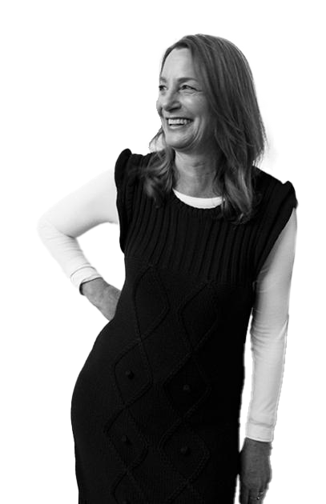

Paula Scher began her career in the 1970s, starting out in the music industry as a record cover designer. This experience laid the groundwork for her distinct style. In the 1980s, she joined the design firm Pentagram, where she became a partner and further honed her craft. Her journey has been marked by a dedication to pushing the boundaries of graphic design.
